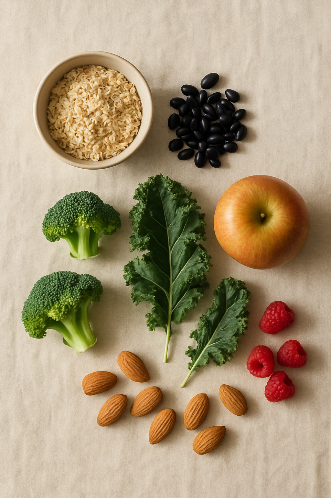
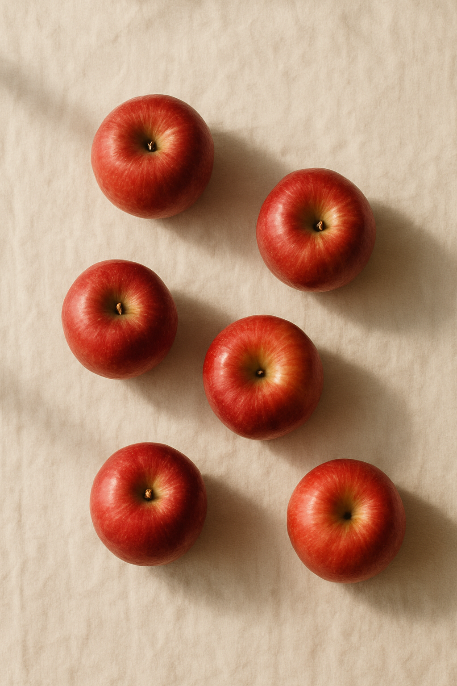

식이섬유 · 우리가 몰랐던 거
야채 1kg을
먹어도,
식이섬유 25g이
안 채워져요.
(이거 알고 / 계셨어요...?)
5-slide educational carousel · digestible format · same Canva pipeline. Topic 1 of 4 in the educational series (Fiber → Organic → What's NOT inside → Soy milk).
| Slide | Beat | Stat / Source |
|---|---|---|
| 1 | HOOK · misconception | "야채 1kg ≠ 25g 식이섬유" · 한국영양학회 RDA |
| 2 | STAT · RDA | 성인 남성 25g · 여성 20g (2025 한국 영양소 섭취기준 · 보건복지부) |
| 3 | VISUALIZE · the gap | "사과 6개" = ~25g fiber (USDA: medium apple ≈ 4.4g) |
| 4 | WHY · 3 benefits | 장 · 포만감 · 가공식품 자리 swap |
| 5 | AVO ANSWER · closer | "한 모금에 5,000mg · 권장량 20%" |

(이거 알고 / 계셨어요...?)
성인 남성 하루 권장량.
(여성은 20g.)
— 2025 한국인 영양소 섭취기준 개정안

(혹은 시금치 / 1kg 분량.)

18가지 유기농 채소·과일에서.
권장량의 약 20%.
매일 챙기는 사람의 시작.